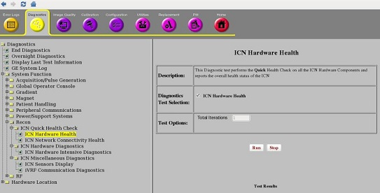
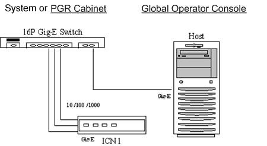

- 00000018WIA308E9F20GYZ
- id_131058433.0
- Jul 10, 2019 2:46:59 PM
Doing the ICN hard disk integrity diagnostic
Diagnostic Link

Purpose
The purpose of this diagnostic is to test the integrity for both hard disks on an ICN. Hard disk store acquisition data for certain applications in DVMR. This diagnostic essentially verifies the ICN hard disks can be used to reliably store and retrieve data by writing a known pattern to the acquisition partitions, reading it back, and comparing the contents.
Components tested
ICN hard disks.
Requirements
The ICN is turned on and has at least one network connection from the ICN motherboard Ethernet port to the Host.
Block diagrams

Test sequence
- Select the ICN Hard Disk Integrity diagnostic from the VRE Hardware Diagnostics screen.
- Click Run.Note: After you click Run, do not click anywhere else in the Common Service Desktop until the test is complete. If you need to abort the test prior to its completion, click Stop.
- Make sure the ICN passes the diagnostic by reviewing the status in the Diagnostic Results table.
Expected results
This diagnostic has either a passed or failed status. If the diagnostic has failed, please review the error log and corresponding extended error messages for subsequent actions. Additional responses to the diagnostic's failed result are outlined in the table below.
| Result | Description | GE Field Action |
| Passed | The ICN passed the diagnostic. | No further action required. |
| Failed | The ICN failed the diagnostic. |
|